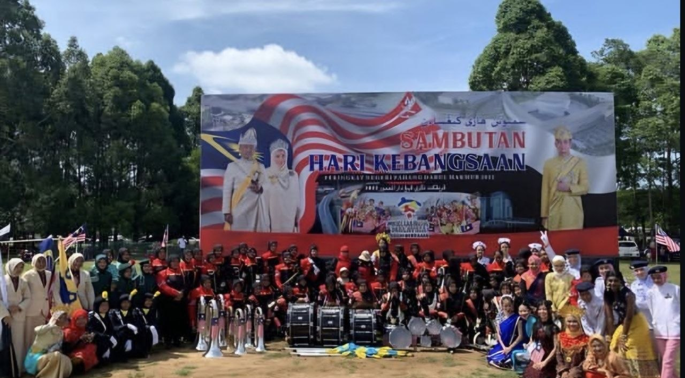

｡ﾟ•┈୨ My Experience🎀 ♡୧┈• ｡
🎺 MGSS Kuantan Brass Band 🎺

♡ Hover to Flip
This is where "Marching Band" was introduced to me. I didn't choose to be here, in fact I, myself have no clue what marching band was. Somehow fate has led me here. It was grueling at first, but time after time, I had a lot of fun and unlocked a new talent within me, perhaps those draining times were worth it after all (๑ᵔ⤙ᵔ๑). At first, I'm in the Colourguard section, but then I switched section to Clarinet. The displayed picture was taken during 2022 Merdeka celebration parade, we won the first place (˶ˆᗜˆ˵).
🦅 De Falcon Brass Band 🦅
♡ Hover to Flip ♡
I was delighted when I knew almost every UiTM have marching band club since the school that I moved during form 4 didn't have any music related club. I was able to play clarinet again, and I learned a new instrument which is tenor drum! Rhythming the drums and controlling the stick is not simple as you think, it takes a lot of time and patience to perfectly ace it. Although the tenor drum weighs around 10+ kg, when you get used to it, it's not that bad. (˶˃𐃷˂˶).
📱 Check out De Falcon!
🎶 My Marching Band Memory 🎶
💗 Likes: 0